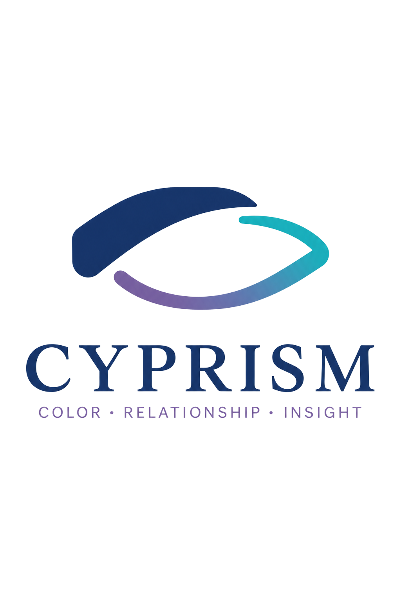
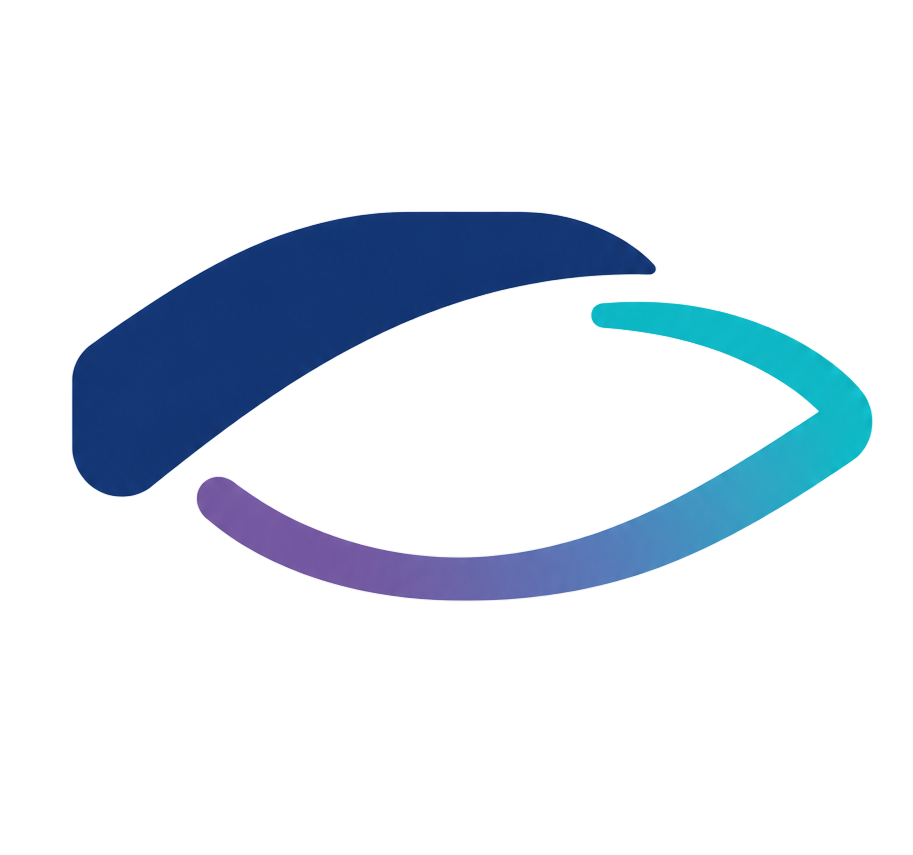

배려했는데 상대는 부담으로 느낍니다.
내가 챙겨주고 싶어서 한 행동이 상대에게는 지나친 간섭으로 전해집니다. 같은 마음이라도 표현하고 받아들이는 방식은 다를 수 있습니다.

CYPRISMCOLOR · BALANCE · INSIGHTCOLOR · BALANCE · INSIGHT
사이프리즘은 컬러성향을 통해 나의 반응과 사람 사이의 차이를 발견하고, 일상에서 사용할 선택과 대화로 연결합니다.

서로 다른 패턴이 만나FAMILIAR SCENES
관계에서 반복되는 갈등은 나쁜 의도보다 서로 다른 반응을 같은 기준으로 해석할 때 시작되기도 합니다.
내가 챙겨주고 싶어서 한 행동이 상대에게는 지나친 간섭으로 전해집니다. 같은 마음이라도 표현하고 받아들이는 방식은 다를 수 있습니다.
빠르게 해결하려는 태도는 재촉으로, 시간을 갖고 싶은 태도는 회피로 오해되기 쉽습니다.
표현하지 않은 양보는 서로에게 합의된 기준으로 전달되지 않습니다.
사이프리즘은 사람을 한 가지 컬러나 고정된 유형으로 단정하지 않습니다. 누가 옳은지를 판단하기보다 서로 다른 반응이 어느 장면에서 만나고 어긋나는지 살펴봅니다. 그리고 그 패턴을 실제 대화와 행동에서 사용할 수 있도록 정리합니다.
“우리는 안 맞는다”에서
“우리는 이 지점에서 다르게 반응한다”로.
PROGRAMS
개인·관계·조직 중 현재의 문제와 참여 대상에 맞는 프로그램을 선택할 수 있습니다.
관계에서 계속 맞추다 지쳐요
나의 반응과 에너지 사용 방식, 강점의 빛과 그림자에서 필요한 균형을 살펴봅니다.
개인 프로그램 자세히 보기 ↗같은 문제로 계속 부딪혀요
두 사람의 반응 패턴과 반복되는 갈등 장면을 살펴보고 다음 대화와 행동을 정리합니다.
관계 프로그램 자세히 보기 ↗팀에서 소통 방식이 자꾸 엇갈려요
서로 다른 업무 속도와 의사결정, 피드백 방식을 컬러를 통해 살펴보고 팀이 함께 사용할 수 있는 소통 기준을 정리합니다.
기업·기관 프로그램 자세히 보기 ↗COLOR BALANCE JEJU
사이프리즘은 컬러를 이해하는 데서 끝나지 않고, 일상에서 새로운 태도와 행동으로 시도할 수 있도록 보완컬러를 제주의 장소와 이야기, 차·향·식재료·소품·엽서 등 다양한 로컬 경험에 연결합니다.
보완컬러는 나에게 부족한 성격을 채우는 정답이 아닙니다. 지금의 상황에서 익숙한 반응을 잠시 벗어나, 평소와 다른 태도와 행동을 시도해보도록 돕는 활용 관점입니다.
제주의 차와 식재료를 천천히 경험하며 지금의 속도와 필요한 에너지를 살펴봅니다.
차 · 식재료 · 컬러 질문향과 작은 소품을 일상의 신호로 사용해 멈춤과 시작, 연결과 전환의 순간을 만듭니다.
향 · 소품 · 컬러 루틴제주의 바다와 숲, 오름과 돌담길을 걸으며 장소가 건네는 질문과 지금의 나를 기록합니다.
장소 · 엽서 · 스토리워크RELATIONSHIP DIFFERENCES
차이를 없애는 것이 아니라, 차이가 갈등이 되는 순간을 알아가는 과정입니다.
우리 사이의 차이 알아보기 ↗HOW IT WORKS
에너지사이언스 컬러성향 DNA 진단보고서를 통해 기본 성향을 확인합니다.
현재 고민과 실제 관계·생활 장면에서 결과가 어떻게 나타나는지 살펴봅니다.
강점이 과도하게 사용되는 지점과 지금 보완이 필요한 방향을 정리합니다.
지금 필요한 포인트 컬러를 대화, 행동, 활동, 환경과 장소에 적용할 수 있는 방법으로 연결합니다.
ANALYSIS BASIS
사이프리즘 프로그램의 기초 진단에는 에너지사이언스의 컬러성향 DNA 진단보고서를 활용합니다. 전문 강사 자격을 갖춘 운영자가 결과의 이해를 돕고, 개인과 관계의 실제 맥락에 연결합니다.
CYPRISM ORIGINAL CONTENT컬러밸런스 리포트, 관계 적용 가이드, 일상 및 장소 활용 제안은 별도의 사이프리즘 기획 콘텐츠로 제공합니다.
컬러성향 DNA 진단은 유전자 검사나 의료적 DNA 검사가 아니며, 의료·임상 심리 진단 또는 치료를 목적으로 하지 않습니다.“사람의 결을 읽고, 관계의 결을 함께 해석합니다.”
컬러성향의 결과는 사람을 규정하는 답이 아니라, 나와 상대를 이해하기 위한 대화의 시작이라고 생각합니다. 10년 이상 컬러 기반 강의와 프로그램을 진행하며, 각자가 다르게 반응하는 이유와 관계에서 반복되는 장면을 살펴왔습니다.
결과를 설명하는 데서 그치지 않고, 발견한 차이를 일상에서 시도할 수 있는 대화와 행동으로 연결합니다.
FAQ
에너지사이언스는 기초 컬러성향 진단체계를 제공하고, 사이프리즘은 그 결과를 개인·관계·조직의 실제 맥락과 일상 활용으로 연결하는 울림테라피의 브랜드입니다.
아닙니다. 명칭의 DNA는 기본 성향을 비유적으로 표현하며 유전자 검사나 의료적 DNA 검사가 아닙니다.
기본 진단보고서는 에너지사이언스의 결과물이며, 사이프리즘 리포트는 실제 고민의 맥락과 밸런스, 일상 적용을 별도로 정리한 독자 콘텐츠입니다.
좋고 나쁜 궁합을 판정하지 않습니다. 차이가 어떤 장면에서 갈등이 되고 강점이 될 수 있는지 살펴봅니다.
아닙니다. 의료·임상 심리 진단이나 치료가 아닌 자기이해와 컬러 커뮤니케이션 프로그램입니다.
개인 프로그램으로 자신의 반응과 관계 패턴부터 살펴볼 수 있습니다. 두 사람의 결과 비교는 각각의 사전 동의가 필요합니다.
진행 가능 방식은 선택한 프로그램과 일정에 따라 개별 안내합니다.
사이프리즘은 울림테라피가 운영하는 컬러 커뮤니케이션 브랜드입니다.
사이프리즘은 교육 운영 브랜드이며, 정확한 자격 관리·발급 주체는 교육·자격과정 상세페이지의 확정 정보로 안내합니다.
START WITH DIFFERENCE
지금의 고민에 맞는 프로그램에서 시작할 수 있습니다.